Water
H2OInChI=1S/H2O/h1H2
OpenBabel

OOK
RDKit

OOK
Indigo
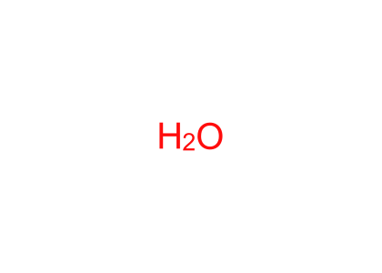
OOK
Cada motor recibe el mismo InChI, genera su propio SMILES y dibuja desde ese SMILES. Así se separa el problema de conversión InChI→SMILES del problema de representación 2D.
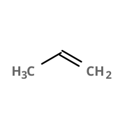
C=CC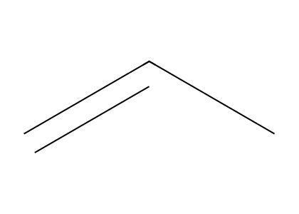
C=CCCC=COO
O
N
N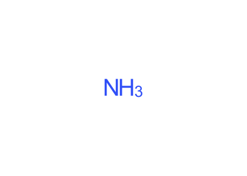
N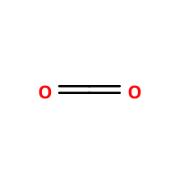
C(=O)=O
O=C=O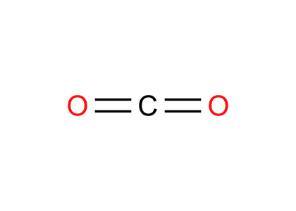
O=C=O
OS(=O)(=O)O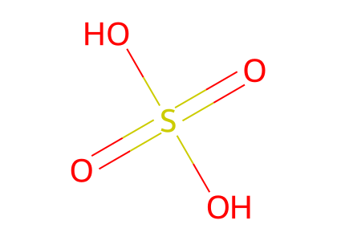
O=S(=O)(O)O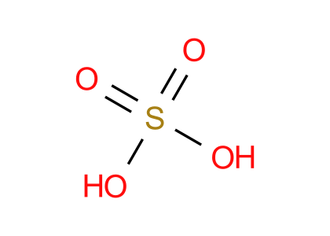
OS(O)(=O)=O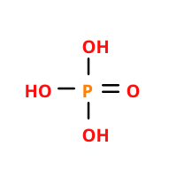
OP(=O)(O)O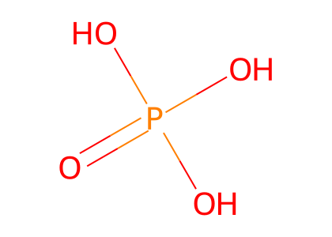
O=P(O)(O)O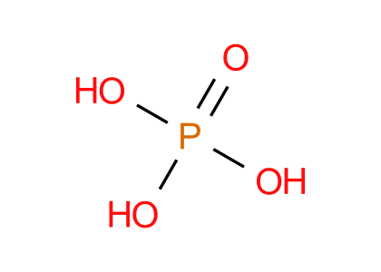
OP(O)(O)=O
[Cl-].[Na+]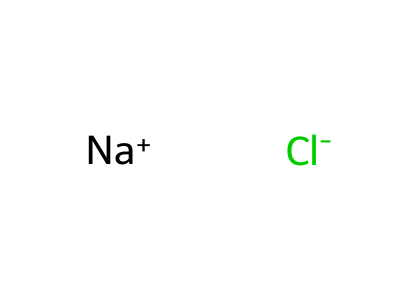
[Cl-].[Na+]
[Na+].[Cl-]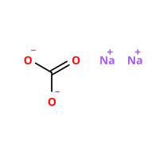
C(=O)([O-])[O-].[Na+].[Na+]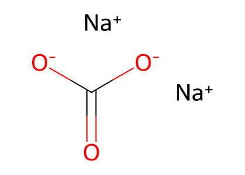
O=C([O-])[O-].[Na+].[Na+]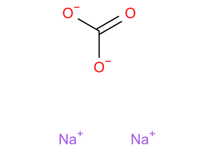
[Na+].[Na+].[O-]C([O-])=O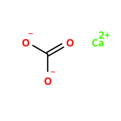
C(=O)([O-])[O-].[Ca+2]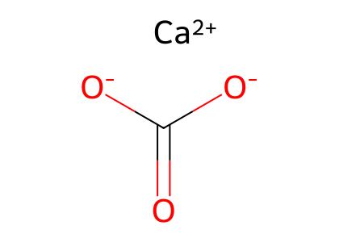
O=C([O-])[O-].[Ca+2]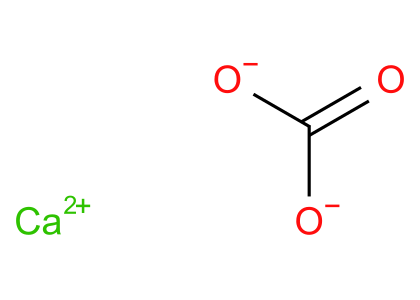
[Ca+2].[O-]C([O-])=O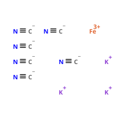
[C-]#N.[C-]#N.[C-]#N.[C-]#N.[C-]#N.[C-]#N.[Fe+3].[K+].[K+].[K+]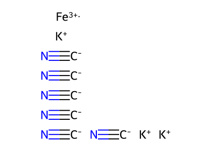
[C-]#N.[C-]#N.[C-]#N.[C-]#N.[C-]#N.[C-]#N.[Fe+3].[K+].[K+].[K+]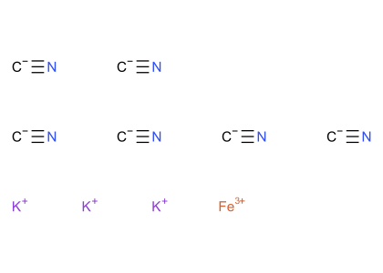
[K+].[K+].[K+].[Fe+3].[C-]#N.[C-]#N.[C-]#N.[C-]#N.[C-]#N.[C-]#N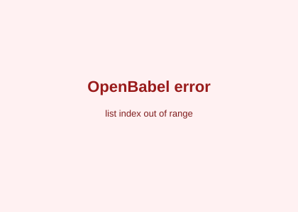
Sin SMILES generado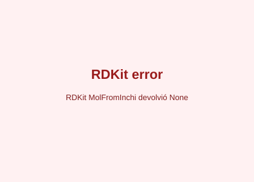
Sin SMILES generado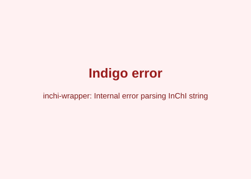
Sin SMILES generado